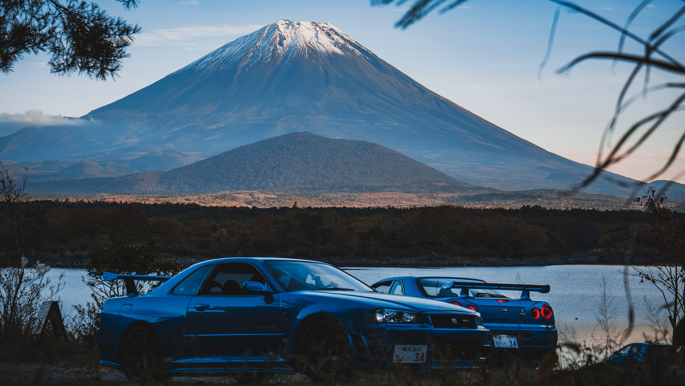

The Fantastic Four

The revolutionaries of engines.
Starting from humble beginnings in the 1940’s, the
small company led by Soichiro Honda developed an engine
for bikes and at the time its success was unwavering but
who knew at the time what the future had in store. Nowadays
you see the history of how they took the vehicle industry by
storm, motorcycles and cars alike, created the luxury brand
Acura, and gems like the k-series motor. Can’t forget about
their impressive gallery of cars such as the NSX, S2000, and
basically any type r vehicle they’ve made just to name a few.

Being the second oldest company in the list it
was founded in 1911 by Masujiro Hashimoto but wouldn’t become an
automotive company until rotating through a few different names and
a merging in the year 1931. Nissan would undergo many name changes
and have to withstand many historic moments backed by its vehicle the
Datsun. Luckily for them in the 50s other countries’ automarket industries
were riddled with gaps that they were able to fill and by doing so
capitalize on the opportunity to really build up the company. Sitting
securely in the “pantheon” of JDM manufacturing like the others mentioned
before it, it also boasts some of the most brag worthy JDM creations like
their Silvia models and most notably, their Skylines. Truly creatures of
beauty made possible by their creation of a top tier icon amongst the best
inline six engines, the RB26DETT engine found in the R32 to the R34.

Sakichi Toyoda (regarded as the King of
Japanese Inventors) wanted to make an improved loom for his
mother and successfully created the first automatic loom, setting
the foundations for the company that we now know as Toyota.
Sakichi Toyota’s son, Kiichiro Toyoda, continuing his father’s
legacy, established Toyota as the Japan’s largest automaker
creating another JDM manufacturing powerhouse that would also
branch out and create the luxury brand Lexus. The innovation of
the 2JZ motor, the reliability across the majority of its vehicles
just like Honda, and the creation of incredible vehicles like :
the Supra, the LFA, the MR2, the Chaser, and the IS300.
It’s origins started all the way back in the 1870
as a shipping firm and became the company we know today after a long
drawn path filled with shady history riddles with scandals, defects,
and dirty business plus they tried to take over a superior automobile
company, Honda in the early 90’s which would’ve ruined a great portion
of the JDM industries’ excellence. If you couldn’t tell I’m not a huge
fan of them which is why I’m keeping it short and sweet. So why did I
still feel compelled to include them? Well it’s because at the end of
the day they still played their role in the progression of the JDM industry
and most notably created the Lancer Evolution (chefs kiss by the way) as well
as the engine that can be found in it the Mitsubishi 4G63T which is not only a
magnificent four cylinder engine but probably one of the best ever created.